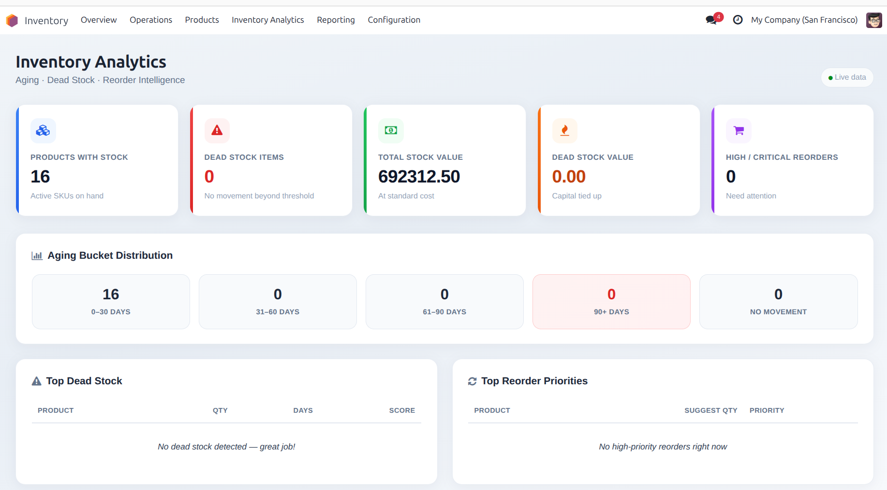
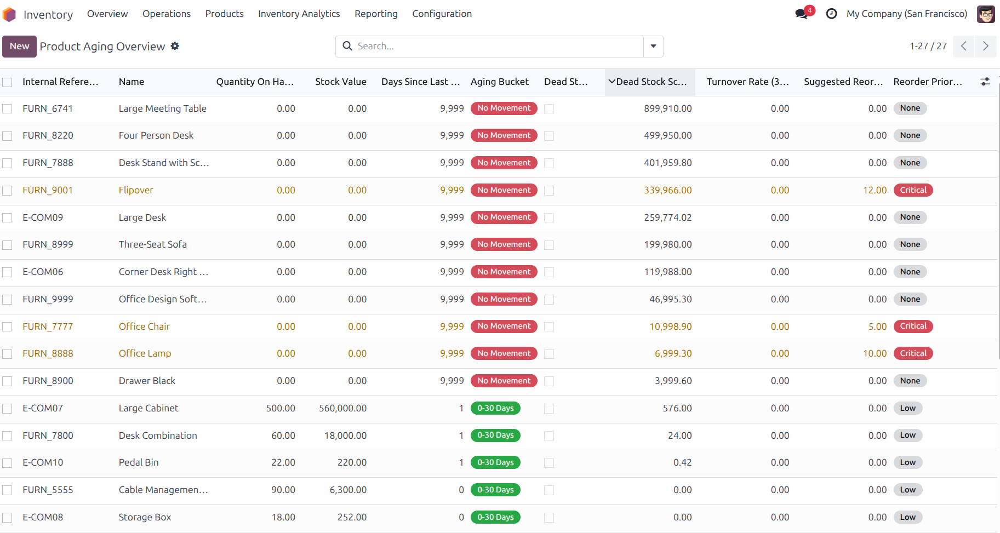
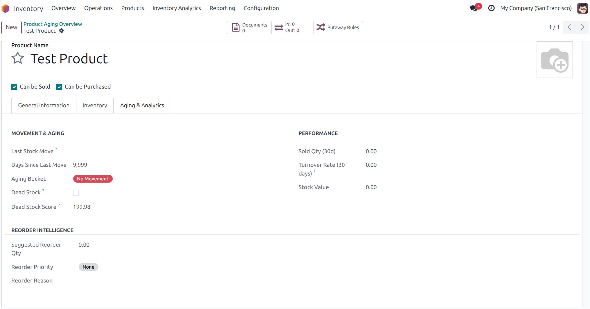
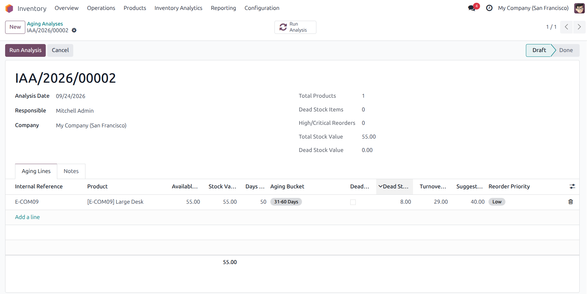
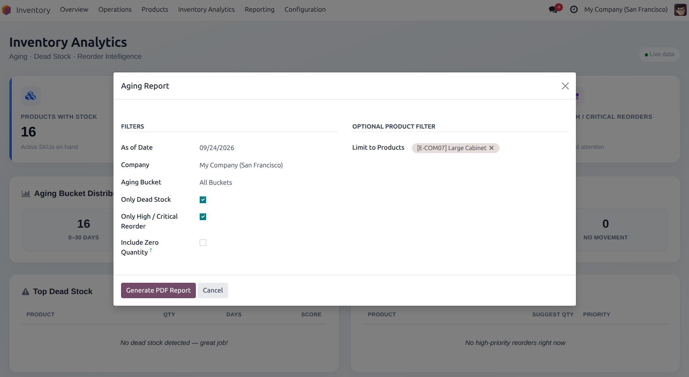
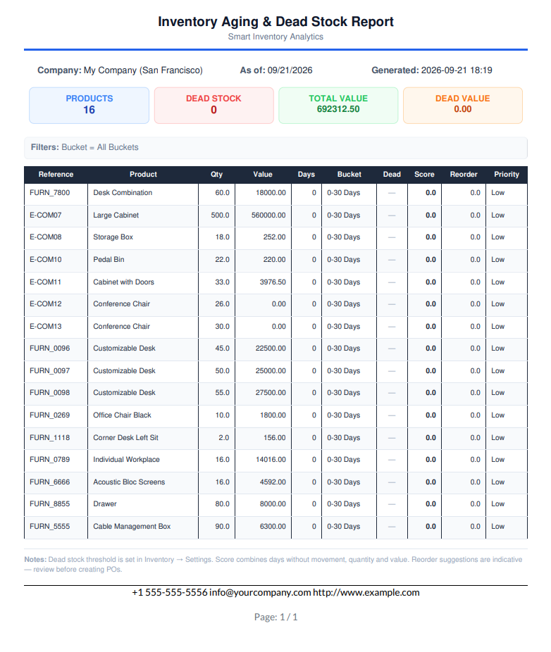
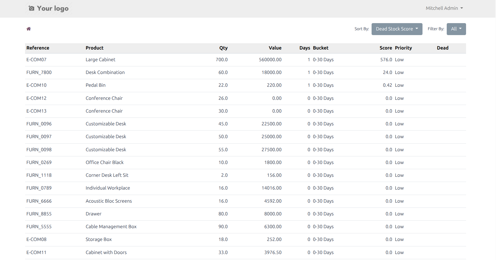

Turn static stock into actionable intelligence. Detect dead stock early, track aging buckets, measure turnover, get smart reorder priorities — and manage it all from a beautiful live dashboard, professional PDF reports and a manager portal.
Every product with stock is classified by days since last movement. Instant visibility into how long inventory has been sitting.
Products with quantity on hand that have not moved beyond a configurable threshold are flagged as dead stock. A composite score prioritises the worst offenders by days, quantity and value.
30-day sold quantity and turnover rate per product. Suggested reorder qty, priority (None → Critical) and a clear reason — so planners know what to act on first.
Scrollable, responsive dashboard with KPI cards, aging bucket distribution, top dead stock and top reorder priority lists — designed for daily use by inventory managers.
Run on-demand analyses to freeze the current aging state. Store lines, totals, bucket distribution and high-priority reorder counts. Optional daily cron for automatic snapshots.
Professional PDF with summary KPIs and detailed product table. Filter by aging bucket, dead stock only, high/critical reorder. Portal page at /my/inventory/aging with sort, filter and pager for authorised users.

KPI cards for products with stock, dead stock items & value, total stock value and high/critical reorders. Aging bucket distribution and top lists for dead stock and reorder priorities.

Dedicated product list with aging bucket badges, dead stock flag, score, turnover, suggested reorder qty and priority. Filters and group-by for fast analysis.

New tab on the product form: last move date, days since move, aging bucket, dead stock, score, turnover, suggested reorder and reason.

Run analysis to capture full lines, totals, bucket distribution and high-priority reorder count. Chatter and status workflow included.

Filter by date, company, aging bucket, dead stock only, high/critical reorder and optional product set. One click to generate a professional PDF.

Summary KPI boxes, applied filters, and a detailed product table with qty, value, days, bucket, dead flag, score, reorder qty and priority.

Portal entry and /my/inventory/aging with filters (all / dead / high reorder),
sorting and pagination for users with access.
| Group | Intended Role | Capabilities |
|---|---|---|
| Smart Inventory / User | Warehouse / Planners | View dashboard, product aging, analyses, portal |
| Smart Inventory / Manager | Inventory Managers | Run analyses, print reports, full configuration |
Installation support, custom extensions (Excel export, multi-warehouse rules, auto PO suggestions) and training available on request.
Smart Inventory Aging, Dead Stock & Reorder Analytics
Odoo 17 · Community & Enterprise · LGPL-3